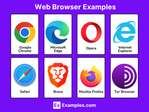

A web browser is a software application that allows users to access, retrieve, and view content on the World Wide Web. It acts as an interface between the user and the Internet, interpreting HTML, CSS, and JavaScript to display web pages in a readable, visual format.
How a Web Browser Works
The user types a URL or clicks a link.
The browser sends an HTTP request to the appropriate web server.
The server responds with the requested web page files (HTML, images, etc.).
The browser's rendering engine processes those files and displays the page on screen.
Key Components of a Browser
Address Bar: Where the user enters a URL.
Rendering Engine: Interprets HTML and CSS to display content visually.
JavaScript Engine: Executes JavaScript code for interactive features.
Bookmarks: Allow users to save frequently visited pages.
Cache: Stores copies of web pages locally to speed up future visits.
Cookies: Small files that store user preferences and session data.
Popular Web Browsers
Google Chrome — Most widely used browser globally (developed by Google).
Mozilla Firefox — Open-source browser known for privacy features.
Microsoft Edge — Default browser on Windows, built on Chromium.
Safari — Default browser on Apple devices.
Opera — Feature-rich browser with a built-in VPN.
Illustration

Figure: Popular web browsers used to access the World Wide Web.